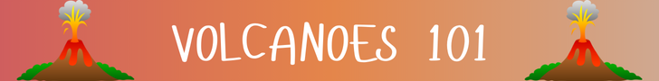

References
- "Composite Volcanoes (Stratovolcanoes)." U.S. National Park Service. 17 April. 2023,https://www.nps.gov/articles/000/composite-volcanoes.htm#:~:text=Composite%20volcanoes%20are%20built%20up,eruptions%20or%20at%20other%20times. Accessed March 2025.
- King, M. H. "Cinder Cones." Geology.com, 2025, https://geology.com/volcanoes/cinder-cones/. Accessed March 2025.
- "Shield Volcano." ByJu's, 2025, https://byjus.com/physics/shield-volcano/. Accessed March 2025.
- Tienrey, C. "Lava Domes.” Oregon State University, Volcano World, 27 May 2010, https://volcano.oregonstate.edu/lava-domes. Accessed March 2025.
- “What Is a Shield Volcano?” EarthHow, 24 July 2019, https://earthhow.com/shield-volcano/. Accessed March 2025.
- "What is a Volcano?" Volcanoes Canada 31 Oct 2024,https://chis.nrcan.gc.ca/volcano-volcan/volcano-volcan-en.php. Accessed March 2025.
Image Sources
- Masnovo, Alberto. Mount Etna: The Park and the Valle Del Bove.Getty Images,2025.
- Mauna Loa, the Biggest Active Volcano on Earth, Erupts. Washington Post, 29 Nov. 2022, https://www.washingtonpost.com/photography/interactive/2022/mauna-loa-volcano-erupts/.
- Mironenko, Tatiana. “Mount Vesuvius,” Britannica, 2025, www.britannica.com/place/Vesuvius.
- Pinatubo Crater Lake, Philipines. 17 Apr. 2011, IStock,www.istockphoto.com/photo/pinatubo-crater-lake-philipines-gm183828410-16268132.
- Thornberry-Ehrlich, Trista. Volcanic Domes. 17 Apr. 2023, National Park Service, https://www.nps.gov/articles/000/domes.htm.
- Tungurahua volcano erupts at night. UGA Research, 2 Feb. 2021, https://research.uga.edu/news/research-finds-link-between-co2-big-volcano-eruptions/.
- Volcano Type (Shield, Dome, Composite, and Caldera). 1 Feb. 2020, IStock, https://www.istockphoto.com/vector/volcano-type-gm1203257303-345764702?searchscope=image%2Cfilm.